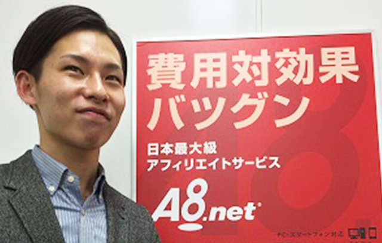

RECRUIT
RECRUIT
REVIEW クライアント様からの
リアル評価
- 株式会社ファンコミュニケーションズ アシスタントマネージャー 山崎 陸生様
- インターネット広告全般の集客支援を行っていらっしゃる会社です。
また山崎様は、A8ネットの事業部でアフィリエイトを中心とした集客支援を行っています。

- スタークスのイメージと、またそう思った理由を教えてください。
- 自社の利益よりも、お客さんの利益を意識している会社です。
お客様にとって、ためになる新サービスを開発したり、自らの営業目標よりも、お客さんの売上げを上げるために全力で取り組んでいます。
営業同行をして、お客様の新規の戦略部分（弊社）＋CRM部分（スタークス）を提案することがありますが、その時にこういった企業姿勢を感じます。会社や人の雰囲気としてイメージカラーを挙げるとするなら、青い部分と赤い部分があると思います。お客さんの売りあげアップのために、ロジックを持って淡々と提案するときもありつつ、熱くビジョンを語ることもある、といった具合です。 - 弊社の担当にどんな印象を持たれましたか？
- 熱心で、お客さんに対してとても熱いです。勉強熱心で、多くの事例を持ってお客さんに提案されてますし、私とも、相互に情報交換をし、お互いのサービスの理解を深めています。
- 率直に、スタークスについて思っていることをお話しください。
- スタークスには「自身で会社を作っていく」「売上げをたてていく」という責任感が非常に強い方が多いので、逆に、ベンチャーマインドや、各営業さんの心意気が高すぎて、安定志向の人や、成長意欲の少ない人はついていけないと思います。モチベーションを自ら高く持とうとする方や、勉強して成長し続けるのが楽しい・やりたい、という方にはマッチすると思います。
ーありがとうございました！
- アライドアーキテクツ株式会社 事業企画室 副室長 番匠 達也様
- アライドアーキテクツ様は、SNSを活用したデジタルマーケティング事業を展開している企業です。普段から、セミナーやお客様のご紹介等で、お付き合いをさせていただいております。
- スタークスのイメージと、またそう思った理由を教えてください。
- 一言でいうと、
[1] 外見は”青”だけど中身は”赤”
[2] ビジョン・ミッションに対するチーム感、です！
[1]については、最初接した時は、爽やかで信頼のおける方たちばかりだな、と感じますが、よくよく話を聞いてみると、皆さんビジネスに
かける想いに熱さを感じました。
[2]に関しては、会社のミッションやビジョンに対して、みんなが同じ想いでひた走っている感じが、羨ましいなと感じる点です。チームで目標達成する！という意識が感じられます。
一緒にセミナーをした際に、”なぜこのビジネスをしているのか”という「想い」をお客様に対してお伝えしていて、その姿勢を見てスタークスさんとお取り組みしたいと感じました。 - 弊社の担当にどんな印象を持たれましたか？
- 「この方のこと嫌いな人はいないんじゃないかな」と思います。僕自身も新規営業を行って様々な人にお会いしますが、その中でも礼儀正しくて、かなり親切で、でも熱さも持ってる、という印象があります。
- ぶっちゃけてスタークスやサービスに関する感想をお聞かせください。
- サービスは、価格だけ見ると割高に見えることもあります。ただ価格に見合った価値があるので、通販立ち上げのお客様には、その価値をしっかり伝える必要がありますね。
ーありがとうございました！
- 株式会社 ライフェックス 代表取締役 工藤 一朗様
- ライフェックス様はリピート通販に特化した商品開発（OEMマーケティング）とコンサルティング業務を行っていらっしゃいます。今期で８期目を迎えられ、セミナー等の協業、クライアント様の相互ご紹介に加え、たまごリピートのお客様として、サービスのご利用もいただいております。
- スタークスのイメージと、またそう思った理由を教えてください。
- ずばり、“モチベーションが高い！”
社員全員が自社・自身の役割を自覚し、目標達成に向けて毎日を全力で過ごしている！そんなイメージです。
クライアント企業様、スタークス、弊社での3社間で打合せをする機会がよくありますが、スタークスの社員の方々はみなさんエネルギーが溢れ、商談の成果を最大限に引き出していると思います。
EC業界における自社の役割の重要性を自覚し、その想いをクライアント企業様に熱弁する姿勢を見ていると私自身のモチベーションも上がります。共にプロジェクトを組むパートナーとしても心強く思っています！
また、スタークスは、現状に満足することなく、常に新しい価値を創造しようという姿勢があり、それをしっかりと有言実行し“形”にしている！ここが素晴らしいと思います。自社のサービスだけではカバーできない、クライアント企業の悩みや課題を解決するために、業界内のパートナーさんと組んでニーズに120％応えようとする点、これも他社には真似できない文化だと思います。 - 弊社の担当にどんな印象を持たれましたか？
- プロ意識が高く、どんな仕事でも妥協しない人間だと思います。夢や目標達成のために今何をすべきか考えて、そのプロセスを逆算して行動までできるロジカル思考の人ですね！色んな方から”Iさんスゴイね！”という言葉を聞きます。
- 同業界の御社から見て、スタークスはどのように見えますか？
- スタークスの急成長の勢いはEC業界にも大きな影響を与えていると思います。ASP事業では業界シェアNo.1を獲得し、リピロジ事業においてもリリース間もなく物凄いスピードで拡大しています。EC業界のリーディング企業として今後益々の注目と期待が高まる会社だと思います。
ーありがとうございました！
pagetop